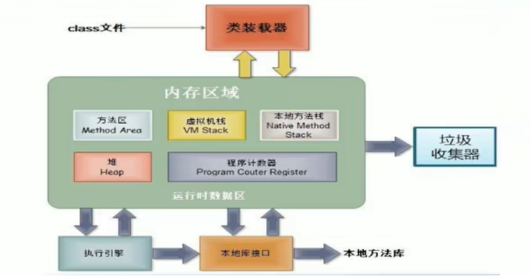

Java - Thread 執行緒(一)

- 什麼是Process？
通常一個應用程序執行起來，就會在記憶體加載一個 Process ，對應到工作管理員來看，一個 Pross 就會對應到一個 PID (Process Identification)；
而一個 Process 會有多個執行緒 (Thread)，代表這個應用程序支持我們能夠使用它自身 同時在裡面做很多事情
例如 執行一個 Java 應用程序java.exe，其實至少有三個執行緒：main() 主執行緒、gc() 資源回收執行緒、例外處理執行緒。當然若有例外發生，會影響主執行緒
- 什麼是併行 與 併發？ 併行：多個CPU同時執行多個任務。例如 多個人同時做不同的事 併發：一個CPU快速切換不同執行緒執行任務。例如 搶演唱會門票、多個人做同一件事

- JVM 的記憶體結構
- 每個 Thread 都有獨立的一套 VM Stack 與 Program Counter Register
- 每個 Process 有獨立的一套 Method Area 與 Heap，即 多個執行緒 (Thread) 一起共用這些資源
有關創建多執行緒的方式 - 實現 interface Runnable，可以參考我的另一篇文章 Java - Thread 執行緒(二) - interface Runnable
- 多執行緒的創建 - 繼承 Thread 類
方式一、
- 創建一個繼承於Thread類的子類別
- 覆寫Thread類的run()
- 創建Thread類的子類物件
- 通做此物件調用start()
class MyThread extends Thread {
/**
* 子執行緒輸出偶數
*/
@Override
public void run() {
// 在這裡寫 在子執行緒要做的事情
for (int i = 1; i <= 10; i++) {
if (i % 2 == 0) {
System.out.println(Thread.currentThread().getName() + " : " + i);
}
}
}
}
/**
* 多執行緒的創建
* 遍歷10以內的所有偶數
* @author sunwc
* @create 2023-03-23 上午 10:23
*/
public class ThreadTest {
public static void main(String[] args) {
// 主執行緒創建一個新執行緒
MyThread t1 = new MyThread();
// 主執行緒啟動子執行緒(會去執行run())
t1.start();
// 測試一、不能通過調用run()的方式啟動執行緒
// t1.run();
// 測試二、子執行緒已經t1.start()啟動，不能再用一樣的語句再啟動一次，會拋出java.lang.IllegalThreadStateException
// 若 threadStatus != 0 會拋此例外
// t1.start();
// 再創建第二個子執行緒
MyThread t2 = new MyThread();
t2.start();
// 主執行緒輸出奇數
for (int i = 1; i <= 10; i++) {
if (i % 2 != 0) {
System.out.println(Thread.currentThread().getName() + " : " + i);
}
}
}
}
輸出結果
Thread-0 : 2
Thread-1 : 2
main : 1
Thread-1 : 4
Thread-0 : 4
Thread-0 : 6
Thread-0 : 8
Thread-0 : 10
Thread-1 : 6
main : 3
main : 5
main : 7
main : 9
Thread-1 : 8
Thread-1 : 10
- 使用匿名子類創建子執行緒
/**
* 使用匿名子類創建兩個子執行緒
* 一個執行緒 印奇數
* 一個執行緒 印偶數
* @author sunwc
* @create 2023-03-23 上午 11:05
*/
public class NonTitleThreadTest {
public static void main(String[] args) {
new Thread() {
@Override
public void run() {
for (int i = 1; i <= 10; i++) {
if (i % 2 != 0) {
Thread.currentThread().setName("thread 1");
System.out.println(Thread.currentThread().getName() + " : " + i);
}
}
}
}.start();
new Thread() {
@Override
public void run() {
for (int i = 1; i <= 10; i++) {
if (i % 2 == 0) {
Thread.currentThread().setName("thread 2");
System.out.println(Thread.currentThread().getName() + " : " + i);
}
}
}
}.start();
}
}
輸出結果
thread 1 : 1
thread 1 : 3
thread 1 : 5
thread 1 : 7
thread 1 : 9
thread 2 : 2
thread 2 : 4
thread 2 : 6
thread 2 : 8
thread 2 : 10
-
Thread類常用的方法
- start()：啟動當前執行緒；調用當前執行緒的run()
- run()：通常需要覆寫Thread類中的此方法，將創建的執行緒要執行的操作寫在此方法中
- currentThread()：靜態方法，回傳當前程式的執行緒
- getName()：取得當前執行緒的名稱
- setName()：設置當前執行緒的名稱
- yield()：釋放當前CPU的執行權
- join()：在 執行緒A 中調用 執行緒B的join()，此時執行緒A就進入阻塞狀態，直到執行緒B全部執行完後，執行緒A才結束阻塞狀態
- stop：已過時不使用。當執行此方法時，強制結束當前執行緒
- sleep(long millitime)：讓當前執行緒“睡眠”指定的毫秒數，在指定的millitime時間內，當前的執行緒是阻塞狀態
- isAlive()：判斷當前執行緒是否還存活
-
Thread 的優先級
-
MAX_PRIORITY: 10
MIN_PRIORITY: 1
NORM_PRIORITY: 5
-
如何取得和設置當前執行緒的優先級
getPriority()：取得執行緒的優先級
setPriority(int priority)：設置執行緒的優先級
-